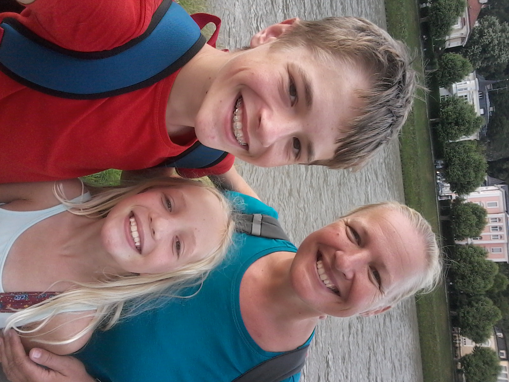

Ich heiße Christian Steinberger. Ich bin 14 Jahre alt. Ich habe am 16. Mai 2004 Geburtstag.
Ich programmiere sehr gerne und außerdem fahre ich sehr gerne auf Urlaub.
Ich höre sehr gerne Radio, ich finde, dass die Antenne das beste Radio auf der ganzen Welt ist.

Ich wohne gemeinsam mit meiner Mama und meiner Schwester in Graz-Eggenberg.
Außerdem bin ich Vegetarier.